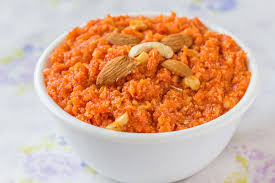

Recipe for Gajar ka Halwa
Recipes

Description
Gajar ka halwa, also known as carrot halwa, is a popular Indian dessert made with grated carrots, milk, sugar, and ghee. This rich and aromatic sweet dish is slow-cooked to perfection, allowing the natural sweetness of the carrots to blend with the creamy texture of milk and the nutty flavor of ghee.
Often garnished with dry fruits like almonds, cashews, and pistachios, it offers a delightful crunch in every bite. Traditionally prepared during winter, festivals, and special occasions, gajar ka halwa is loved for its warm, comforting taste. Whether served hot or cold, this dessert remains a timeless favorite in Indian households.
Ingredients
- Carrots (Grated)
- Milk (Full cream)
- Sugar
- Ghee
Steps
- Prepare the Carrots:
- Wash and peel the carrots.
- Grate them using a hand grater or food processor.
- Cook the Carrots in Milk:
- In a heavy-bottomed pan, add grated carrots and full-fat milk.
- Cook on medium heat, stirring occasionally.
- Simmer until the milk reduces and thickens (about 45-50 minutes).
- Add Sugar and Ghee:
- Once the milk has evaporated, add sugar and mix well.
- Cook until the mixture thickens again.
- Add ghee and sauté for 5-7 minutes until glossy.
- Add Flavors & Dry Fruits:
- Add cardamom powder for flavor.
- Heat 1 teaspoon ghee in a small pan and fry cashews, almonds, raisins, and pistachios.
- Mix the fried dry fruits into the halwa.
- (Optional) Add Khoya:
- If using khoya, crumble and add it to the halwa.
- Mix well and cook for another 5 minutes.
- Final Touch & Serve:
- Once the ghee starts separating, turn off the heat.
- Garnish with extra chopped nuts and serve warm.